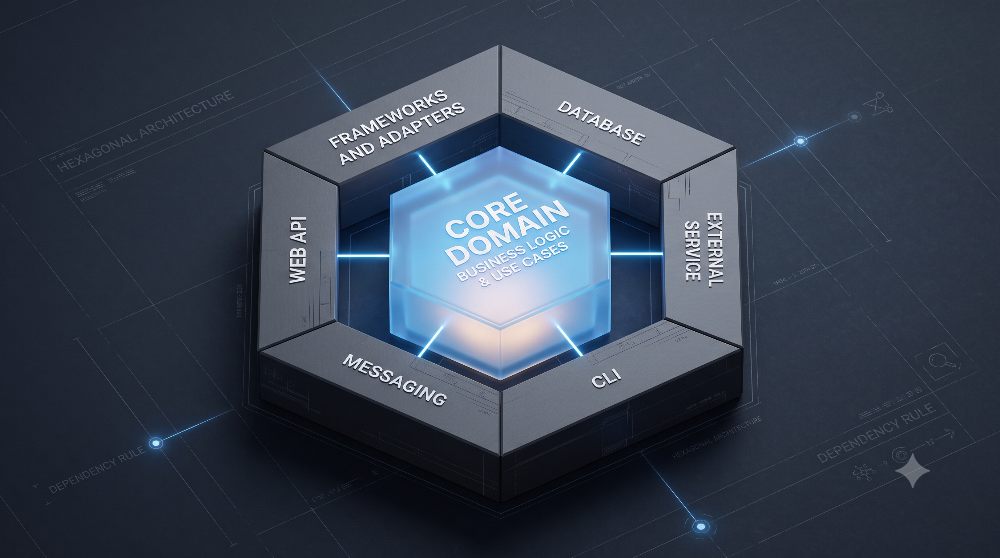

Série: Do Silício ao Chão de Fábrica — Episódio 01
A Queda da Babel dos Frameworks

Tempo de leitura: 5 minutos
Durante as últimas duas décadas, o desenvolvimento de software viveu sob a liturgia dos frameworks. Equipes inteiras ergueram Babel digitais discutindo se React, Spring Boot ou .NET salvariam a operação. Dominar essas sintaxes era a garantia de salários inflacionados. No entanto, quando as ferramentas de automação transformaram a digitação de código em commodity instantânea, esse ciclo desmoronou. Hoje, um CRUD que antes exigia três horas de esforço é gerado em trinta segundos — e o preço real é cobrado em meses de depuração posterior.
Com a facilidade de geração, o mercado deparou-se com a ressaca silenciosa do Código Espaguete 2.0. O "cheiro de código" moderno manifesta-se em arquivos de 600 linhas criados em quatro segundos, importando três bibliotecas obscuras que ninguém no time sabe auditar. A automação virou o StackOverflow com esteroides. Sem a orientação de fundamentos de engenharia, desenvolvedores em início de carreira correm o risco de ficar aprisionados em um ciclo de geração mecânica, copiando e colando lógica fragmentada que funciona em localhost, mas causa estouros em pools de conexões e vazamentos silenciosos de memória em ambiente de produção sob carga real.
À medida que a ilusão da velocidade sem consistência cobra seu preço na infraestrutura, os frameworks perdem o protagonismo. É aqui que o profissional maduro assume um papel indispensável: atuar como mentor e arquiteto de estruturas sólidas. O valor estratégico migrou da digitação rápida para o entendimento profundo dos fundamentos de computação: como os dados fluem fisicamente, como os recursos são alocados e como desenhar arquiteturas capazes de sobreviver ao atrito operacional.
A Solução de Engenharia: Isolando o Acoplamento
Para proteger as regras de negócio estáveis da volatilidade do código gerado por ferramentas automáticas, a solução é o isolamento arquitetural. Usando o padrão de Arquitetura Hexagonal (Portas e Adaptadores), os frameworks e bibliotecas externas ficam restritos à camada externa. O núcleo da aplicação permanece limpo e fácil de ser auditado de forma manual por humanos.

Esquema de isolamento de dependências e proteção do núcleo do negócio.
A Lente do Negócio: O Risco da Dependência Oculta
Para o líder de negócios ou tomador de decisão não técnico, a mensagem é simples: velocidade inicial de entrega não é garantia de eficiência operacional futura. Se o seu time de desenvolvimento apenas copia e cola código gerado por inteligência artificial acoplado diretamente a fornecedores ou ferramentas específicas, sua empresa está acumulando uma dívida silenciosa. Caso o provedor do framework mude suas regras de licenciamento ou aumente o custo transacional, migrar o sistema será um pesadelo logístico e financeiro. Blindar o núcleo do seu software com uma arquitetura desacoplada significa assegurar que a propriedade intelectual da sua empresa permaneça sob seu controle total, garantindo a longevidade dos investimentos em tecnologia.
A IA pode gerar blocos e empilhar arquivos a velocidades industriais. Mas a planta que impede o prédio de desabar continua sendo responsabilidade humana.
Seu time está de fato construindo sistemas robustos — ou apenas acumulando arquivos na nuvem?
Lousa de Conceitos e Dicionário de Termos
- Arquitetura Hexagonal (Portas e Adaptadores): Padrão de design de software que isola o núcleo de negócios das dependências externas (como frameworks, banco de dados e APIs), facilitando a testes e auditoria humana.
- Boilerplate Code: Seções de código repetitivas que devem ser incluídas em muitos lugares com pouca ou nenhuma alteração, hoje inteiramente terceirizadas para IAs.
- Código Commodity: Linhas de instrução lógica cuja geração tornou-se barata e automatizada, reduzindo o valor de mercado de profissionais focados apenas em sintaxe.
- Código Espaguete 2.0: Sistemas volumosos gerados por inteligências artificiais em blocos isolados que, embora funcionem individualmente, carecem de coerência arquitetural e geram problemas difíceis de auditar.
— Fim do Episódio 1. Continua no Episódio 2: O Programador Auditor. Índice da série em: Chamada e Índice.
Nota do Autor: Este é o primeiro episódio da série "Do Silício ao Chão de Fábrica", analisando de forma pragmática a transição do papel técnico frente à automação de código.